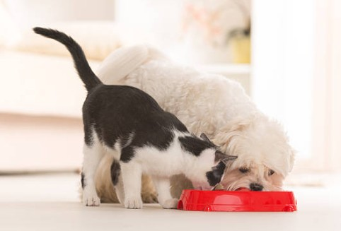

Nutrición para una vida saludable
Elige alimentos balanceados y adecuados a la edad, tamaño y condición de tu mascota. El agua fresca y el ejercicio complementan una buena dieta.
Elige alimentos balanceados y adecuados a la edad, tamaño y condición de tu mascota. El agua fresca y el ejercicio complementan una buena dieta.